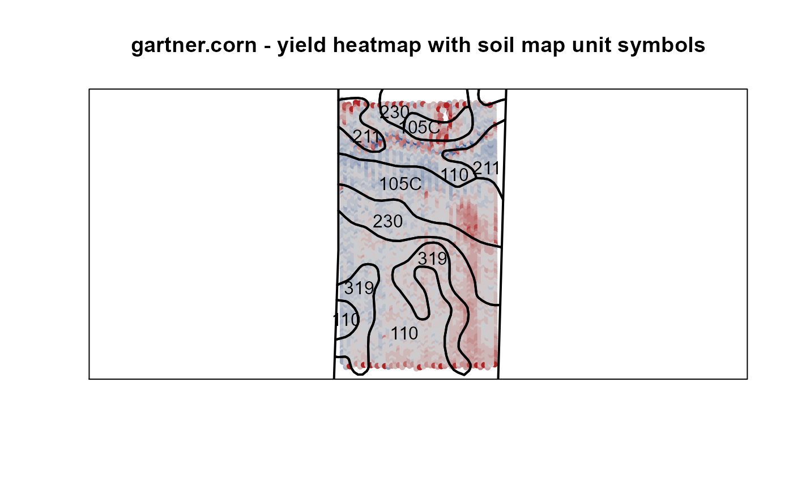
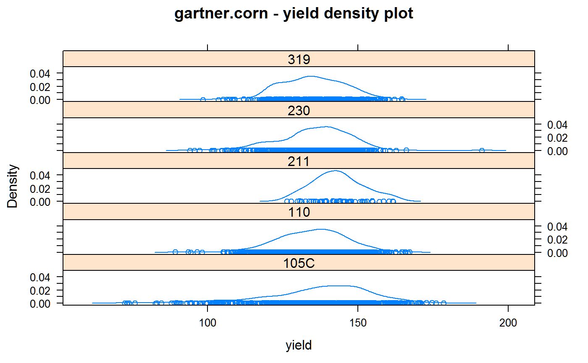

gartner.corn.RdYield monitor data from a corn field in Minnesota
data("gartner.corn")
A data frame with 4949 observations on the following 8 variables.
longlongitude
latlatitude
massgrain mass flow per second, pounds
timeGPS time, in seconds
secondsseconds elapsed for each datum
distdistance traveled for each datum, in inches
moistgrain moisture, percent
elevelevation, feet
The data was collected 5 Nov 2011 from a corn field south of Mankato, Minnesota, using a combine-mounted yield monitor. https://www.google.com/maps/place/43.9237575,-93.9750632
Each harvested swath was 12 rows wide = 360 inches.
Time 0 is 5 Nov 2011, 12:38:03 Central Time. Time 16359 = 4.54 hours later.
Yield is calculated as total dry weight (corrected to 15.5 percent moisture), divided by 56 pounds (to get bushels), divided by the harvested area. drygrain = [massflow * seconds * (100-moisture) / (100-15.5)] / 56 harvested area = (distance * swath width) / 6272640 yield = drygrain / area
Originally from University of Minnesota Precision Agriculture Center. http://www.soils.umn.edu/academics/classes/soil4111/hw/
Retrieved 27 Aug 2015 from https://web.archive.org/web/20100717003256/http://www.soils.umn.edu/academics/classes/soil4111/files/yield_a.xls
Used under Creative Commons BY-SA 3.0 license.
library(agridat) data(gartner.corn) dat <- gartner.corn # Calculate yield dat <- transform(dat, yield=(mass*seconds*(100-moist)/(100-15.5)/56)/(dist*360/6272640)) # Delete yield outliers dat <- subset(dat, yield >50) # Colors for yield medy <- median(dat$yield) ncols <- 20 wwidth <- 150 brks <- seq(from = -wwidth/2, to=wwidth/2, length=ncols-1) brks <- c(-250, brks, 250) # 250 is safe..we cleaned data outside ?(50,450)? yldbrks <- brks + medy dat <- transform(dat, yldbin = as.numeric(cut(yield, breaks= yldbrks))) # Add polygons for soil map units # Go to: http://websoilsurvey.nrcs.usda.gov/app/WebSoilSurvey.aspx # Click: Lat and Long. 43.924, -93.975 # Click the little AOI rectangle icon. Drag around the field # In the AOI Properties, enter the Name: Gartner # Click the tab Soil Map to see map unit symbols, names # Click: Download Soils Data. Click: Create Download Link. # Download the zip file and find the soilmu_a_aoi files. # Read shape files libs(rgdal)#>#> #> #> #> #> #> #> #># shp <- readOGR("C:/x/rpack/agridat/inst/files","gartner.corn") shp <- readOGR(system.file(package="agridat", "files"), "gartner.corn")#> OGR data source with driver: ESRI Shapefile #> Source: "C:\x\rpack\agridat\inst\files", layer: "gartner.corn" #> with 14 features #> It has 4 fields #> Integer64 fields read as strings: SPATIALVER# Plot the shapefiles first to set up the coordinate system plot(shp, xlim=range(dat$long), ylim=range(dat$lat))box() # Add the yield pointsredblue <- colorRampPalette(c("firebrick", "lightgray", "#375997")) with(dat, points(long,lat, main="yield heat map", col=redblue(ncols)[yldbin], cex=.75, pch=16))title("gartner.corn - yield heatmap with soil map unit symbols")# Manual annotation of soil map units text(x = c(-93.97641, -93.97787, -93.97550, -93.97693, -93.97654, -93.97480, -93.97375, -93.978284, -93.977617, -93.976715, -93.975929), y = c(43.92185, 43.92290, 43.92358, 43.92445, 43.92532, 43.92553, 43.92568, 43.922163, 43.926427, 43.926993, 43.926631), lab=c("110","319","319","230","105C","110","211","110","211","230","105C"))# Trim off the ends of the field & re-do image above dat <- subset(dat, lat < 43.925850 & lat > 43.921178) # Identify the soil type for each yield point dat$ix <- over(SpatialPoints(dat[ , c('long','lat')]), SpatialPolygons(shp@polygons)) dat$mu <- shp@data[, "MUSYM"][dat$ix] # Check the points are properly identified # with(dat, points(long,lat, col=redblue(ncols)[ix], cex=.75, pch=16)) # Aggregate points by soil type and analyze tapply(dat$yield, dat$mu, mean)#> 105C 110 211 230 319 #> 137.0062 134.9430 143.2656 135.3349 135.0155#> 105C 110 211 230 319 #> 17.521462 11.166786 8.513848 11.958948 10.668256